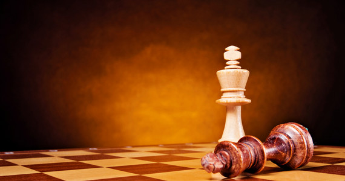

Ding Liren
Ding Liren
Wielokrotnie reprezentował Chiny na mistrzostwach świata juniorów w różnych kategoriach wiekowych, zdobywając trzy medale: dwa srebrne (Heraklion 2002 – MŚ do 10 lat, Heraklion 2004 – MŚ do 12 lat) oraz brązowy (Ateny 2012 – MŚ do 20 lat).
W 2009 r. odniósł duży sukces, zdobywając tytuł indywidualnego mistrza kraju. W turnieju tym wypełnił trzecią normę arcymistrzowską (dwie pierwsze uzyskał w zakończonych dwa dni wcześniej mistrzostwach Azji), zatem zdobycie tytułu arcymistrza zajęło mu niecały miesiąc. Należy przy tym zwrócić uwagę, iż w momencie otrzymania tytułu arcymistrza był zawodnikiem nieutytułowanym, co zdarza się bardzo rzadko. W 2011 r. zdobył drugi w karierze tytuł mistrza Chin, a w 2012 – trzeci. W 2014 r. podzielił I m. (wspólnie z Bu Xiangzhim) w Danzhou. W 2015 r. podzielił II m. (za Magnusem Carlsenem, wspólnie z Maximem Vachier-Lagrave'em, Wesleyem So i Aniszem Girim) w turnieju Tata Steel w Wijk aan Zee.
Fajne zdjęcia szachów:


